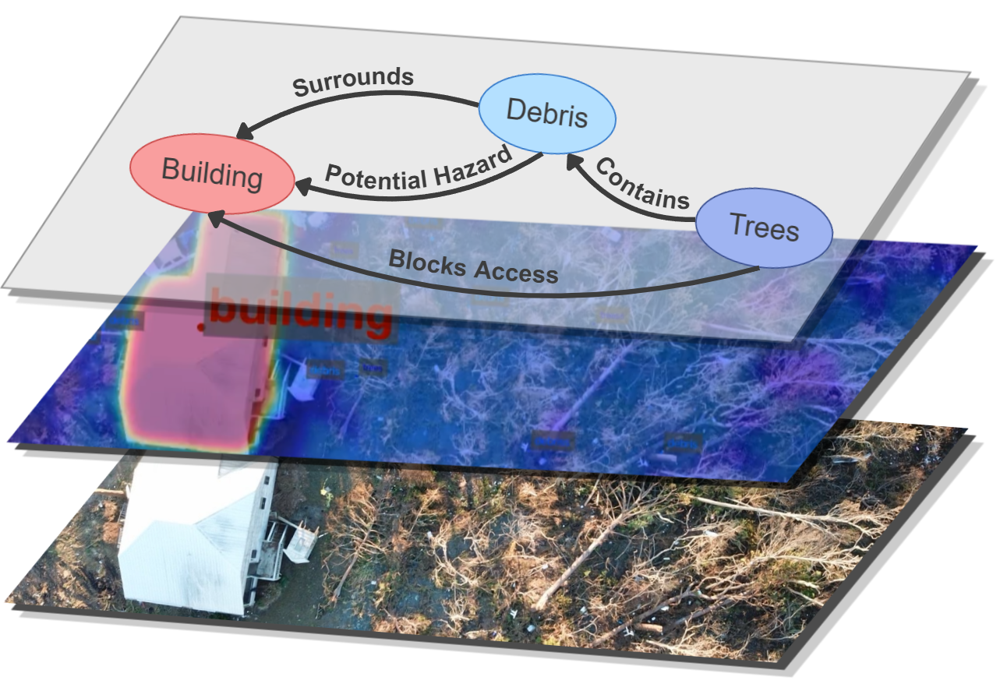

|
Joseph Letobar I am an undergraduate researcher at the Laboratory for Interaction of Machine and Brain (LIMB) at the University of Central Florida, a part-time engineer at Lockheed Martin, and have research experience at the Georgia Tech Research Institute. |
ResearchMy research interests are broadly in Embodied AI, with a focus on computational perception through computer vision and haptic sensing, and a focus on cognitive robotics. In practice, this means developing robotics and AI architectures inspired by neuroscience and cognitive science. |
|
 |
THOTH: Task-Aware Semantic Memory for Aerial Missions
Joseph Letobar, Arianna Lee, Jylen Tate, Neal Cronin, Clint Johnson MIT Undergraduate Technology Research Conference (URTC), 2026 (under review) research paper THOTH (Task-aware, Hierarchical, Open-vocabulary, Traceable Heatmap), a task-aware semantic memory system for long-horizon aerial missions. |
|
|
Rational Episodic Memory: When Should Wearable AI Remember?
Joseph Letobar European Conference on Computer Vision (ECCV) Wearable AI Workshop, 2026 (accepted) research paper Engagement and surprise, respectively inspired by Theory of Mind research and predictive processing, serve as cognitively inspired signals for deciding what wearable AI should remember. |
|
|
Plug and Play Myoelectric Control
Joseph Letobar, Mohsen Rakhshan research poster Evaluating the effects of force control on the intuitiveness of myoelectric prosthetic hand control. |
|
|
Augmented Reality Bowling
Joseph Letobar Personal project, 2026 source code Real-time lane and ball analytics using computer vision. |
Miscellanea |
Work Experience |
Jul 2025 - Present, Orlando, FL — Laboratory for Interaction of Machine and Brain, Undergraduate Researcher
Dec 2025 - Present, Orlando, FL — Lockheed Martin, Quality Engineer (Part time) May 2026 - Aug 2026, Atlanta, GA — Georgia Tech Research Institute, Research Intern Apr 2025 - Jul 2025, Orlando, FL — UCF Information Technology, Information Technology Intern |
Education |
Expected Aug 2028, Orlando, FL — University of Central Florida, B.S. in Computer Science |